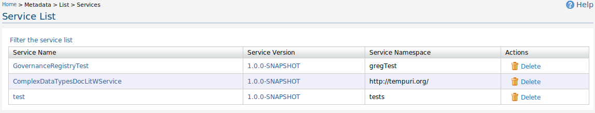
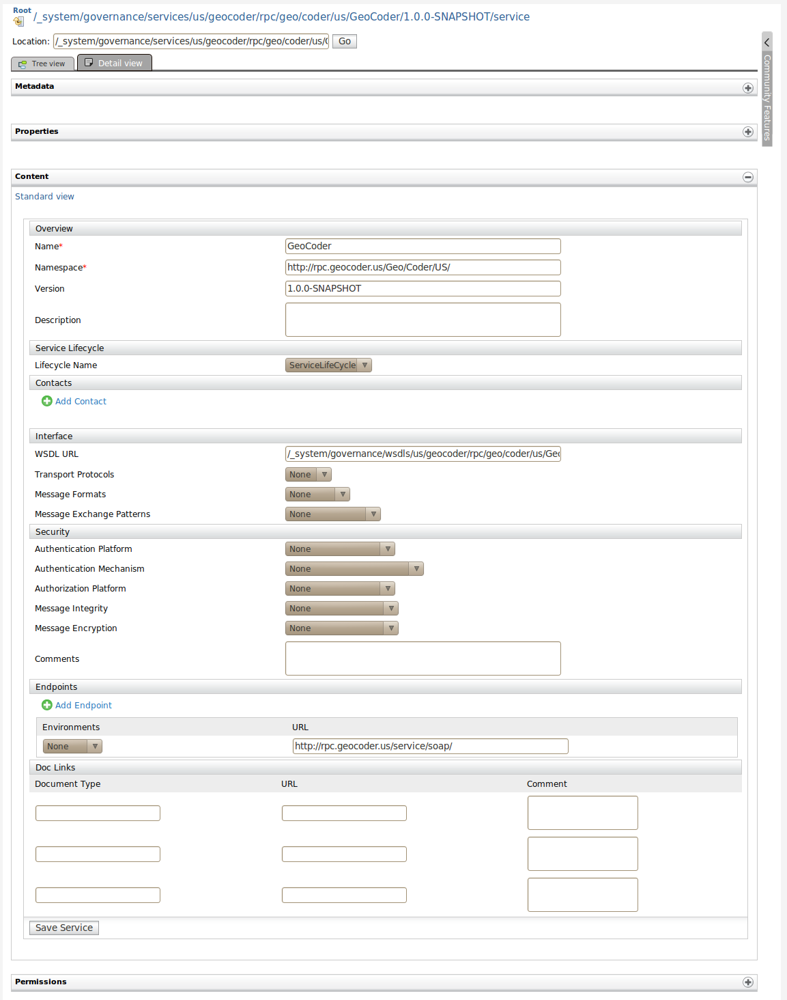
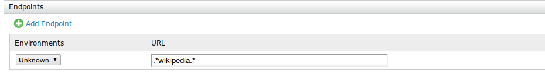

With metadata management we are allowing users to manage the imported metadata as resources management in the Governance Registry since all the information are stored as resource information inside the Governance Registry. In the Metadata list part users can list imported resources, WSDLs, Schemas and Policies.
When user click list services user will be display the services imported through add service UI and add WSDL UI. Service listing page displays the service names namespace and delete link to click to delete the added resource.Important thing here is even though you have imported through WSDL user can click on resource and go the add service UI which automatically filled some of the information extracted using the WSDL.

Figure 1: Service List
In the previous figure you can see two services one imported using add-Service and other imported using Add-WSDL. User can click the service imported using WSDL and go to edit Service UI like following figure.

Figure 2: Service Content
As you can see some of the information has been extracted using WSDL and now user can fill user's own information by editing the service UI and save it. Please note that WSDL URL field has been replaced with the resource path of the imported WSDL so that by clicking on that link user can go to imported WSDL registry resource.
In the service Listing page users can see a link called "Filter the Service list", once you click it you can give service parameters through the same UI where you used to add services and search for given parameters and filter the service list.
Listing other metadata like Policies, Schemas and WSDLs are similar to listing services instead it contains a link to view the dependencies between resources. As example there is a dependency between a WSDL resource and it's service resource and WSDL resource will be having dependencies with some schema resources. Those dependencies can be viewed if user click view dependencies. And user can traverse to those dependencies by clicking on dependencies links.

Figure 3: Service Dependency